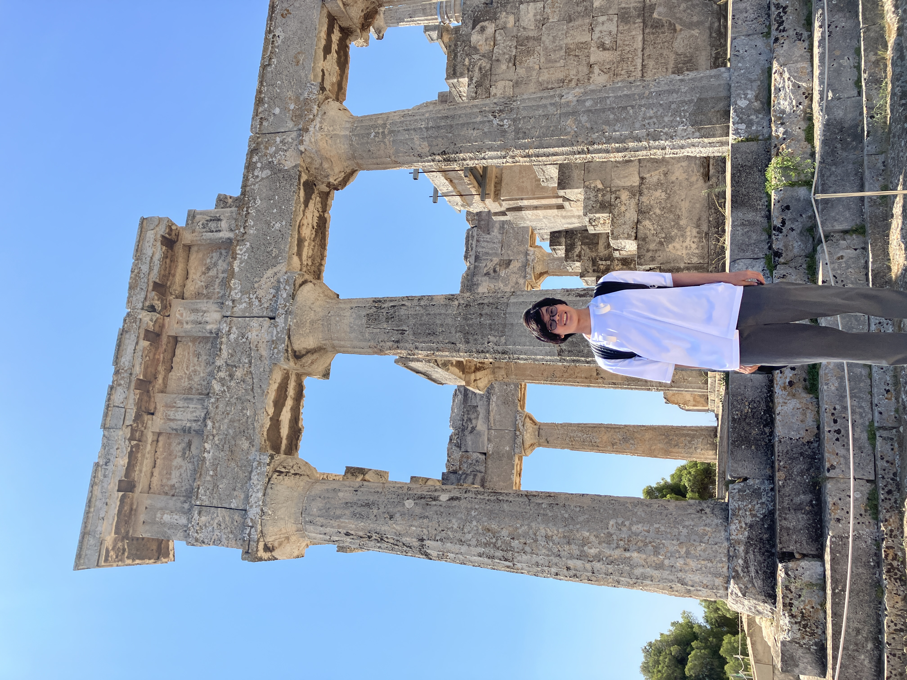

お知らせ
multi-messenger C01 workshop (東工大, 2025/10/2-3) に参加します。 (2025/8/23 更新)
2025秋天文学会 (山口県下関, 2025/9/9-11) に参加します。 (2025/8/23 更新)
Webpage を大幅に更新しました。 (2025/8/23 更新)
ありがたいことにこれまで研究で行けたところ(初訪問メモ)
- 2025/7 東京大学 駒場 (セミナー)
- 2025/1-3 アメリカ ペンシルベニア州立大 (セミナー)
- 2025/1-3 アメリカ ニューヨーク コロンビア大, CCA (研究滞在とセミナー)
- 2024/12 国立天文台 (理論懇)
- 2024/10 水上 (マルチメッセンジャー国際会議)
- 2024/9 北海道大学 (秋物理学会)
- 2024/9 関西学院大学 (秋天文学会)
- 2024/8 信州大学 (マルチメッセンジャー夏の学校)
- 2024/7 ギリシャ、アテネ (GRB Forum)
- 2024/7 熱海 (AMES workshop)
- 2024/3 東京大学 柏 (セミナー)
- 2024/2 青山学院大学 相模原 (セミナー)
- 2023/12 弘前大学 (理論懇)
- 2023/12 下呂 (マルチメッセンジャー国際会議)
- 2023/11 東京大学 本郷 (高エネ研)
- 2023/9 イタリア ナポリ (TeVPa2023)
- 2023/8 軽井沢 (マルチメッセンジャー夏の学校)
- 2023/7 名古屋大学 (ICRC2023)
- 2023/7 東京大学 本郷 (セミナー)
- 2023/3 立教大学 (春天文学会)
- 2023/2 アメリカ ラスベガス (NCfA Symposium 2023)
- 2022/12 福島 (理論懇)
- 2022/10 広島大学 (高エネ研究会)
- 2022/9 新潟大学 (秋天文学会)
- 2022/8 カナダ キングストン (TeVPA2022)
- 2017/4 仙台 (在住)